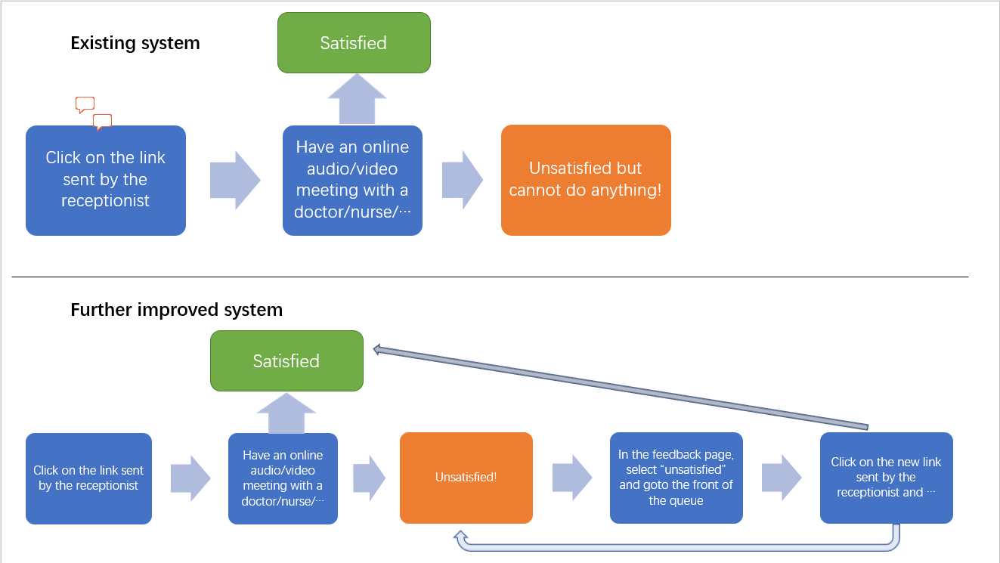
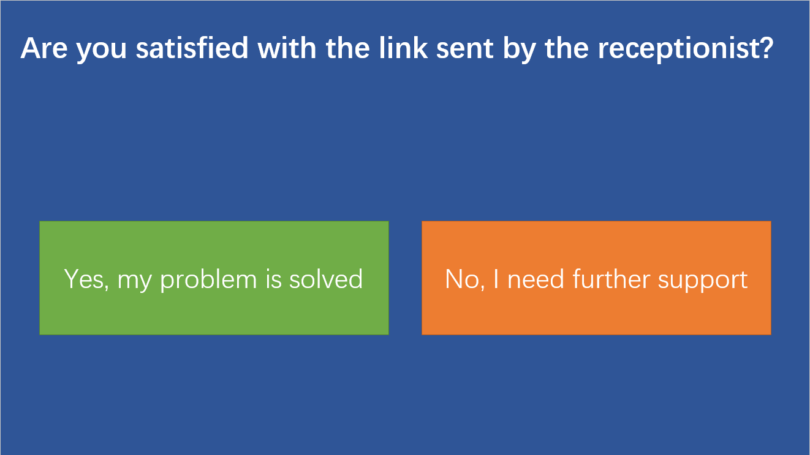

Further improvements
The project has achieved most of the features required by the clients, however it could be improved in the following aspects:
Caller feedback mechanism
Once the caller finishes their call, there is no way for the caller to provide feedback on the qaulity of the call - i.e. Was their query answered? Do still need to speak to someone?
In the future, it would be useful to provide a method for callers to provide feedback on the practice. Additionally, there can be a way for callers to receive a practice number to call after they have used the system, to talk to someone if they still require help.
Flow chart:

Draft feedback page:

Use online database to store caller records
The current project stores all the caller records in a txt file, as we are NOT provided with any online NHS database to store the caller data. It would be more secure and efficient to store all caller records in a database - specifically, access to the NHS' FIHR database would allow all patient records to be consitent and centralised.
Caller list
It would be useful for practices to keep a log of callers that have used the system so that patients that require extra time and more personal input can be contacted
This can also be used for when the system is offline (e.g. over weekends) so that receptionists can see a list of callers that they would need to attend to once the system is back online.